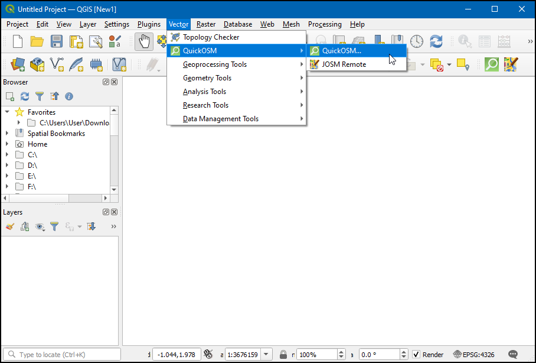
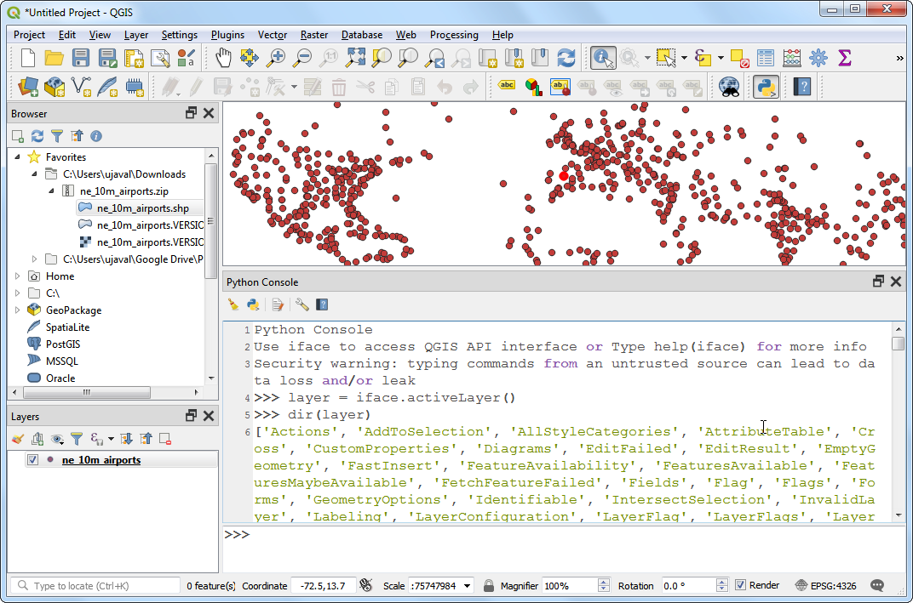
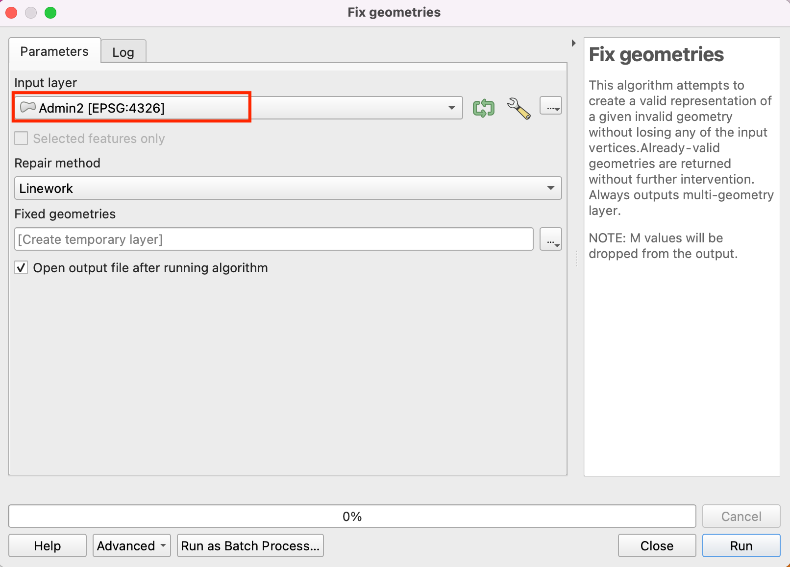
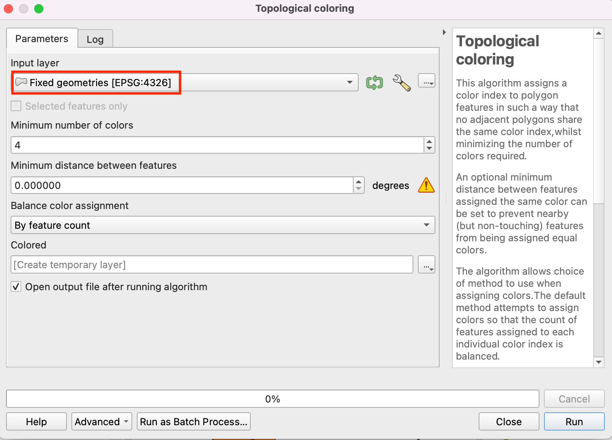
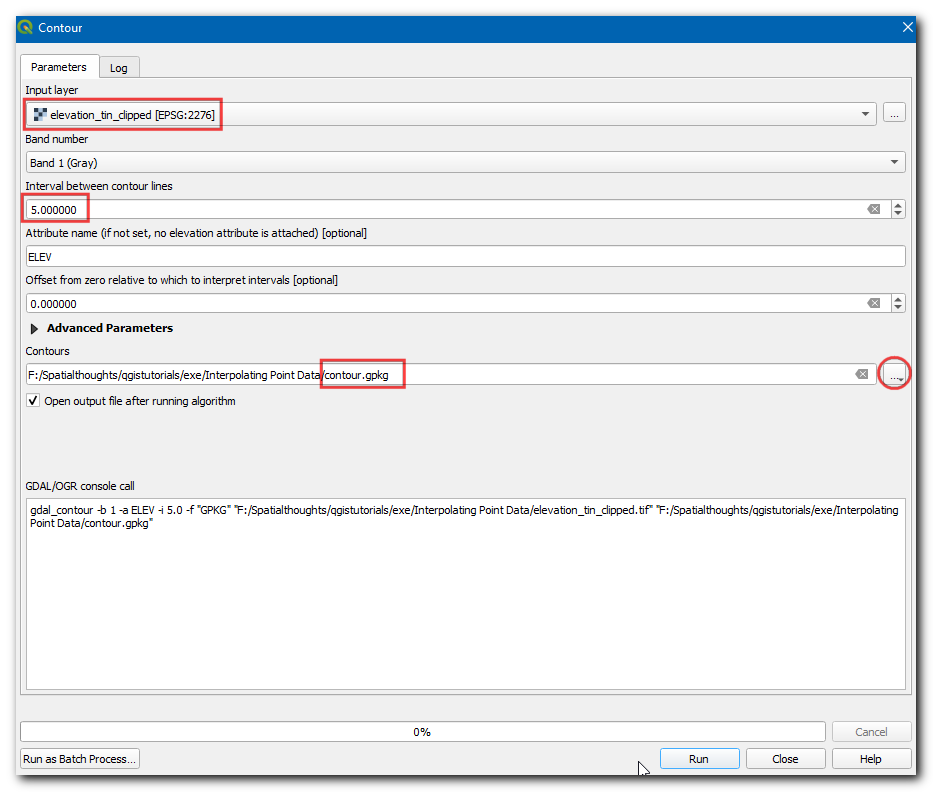

Localizando la Instalación Más Cercana con Matriz Origen-Destino (QGIS3)¶
En el tutorial previo, Visualización y Enrutamiento Básico de Red (QGIS3), aprendimos como construir una red y calcular la ruta más corta entre 2 puntos. Podemos aplicar esa técnica para varios tipos diferentes de análisis basado en red. Una de esas aplicaciones es el cálculo Matriz Origen-Destino o Matriz OD. Dado un conjunto de puntos de origen y otro conjunto de puntos destino, podemos calcular la ruta más corta entre cada par de origen-destino y averiguar la distancia/tiempo de viaje entre ellos. Tal análisis es útil para ubicar la instalación más cercana a un punto dado. Por ejemplo, la empresa de logística puede usar este análisis para encontrar el almacen más cercano a sus clientes para optimizar las rutas de entrega. Aquí usaremos el algoritmo Matriz de Distancia del complemento QGIS Network Analysis Toolbox (QNEAT3) para encontrar la instalación de salud más cercana a cada dirección en la ciudad.
Nota
Este tutorial muestra como usar tus propios datos de red para calcular una matriz origen-destino. Si no tienes tus propios datos de red, puedes usar Complemento ORS Tools y el algoritmo para hacer el análisis similar usando datos OpenStreetMap. Vea Análisis de Área de Servicio usando Openrouteservice (QGIS3) para aprender como usar el complemento ORS Tools.
Vista general de la tarea¶
Tomaremos 2 capas para Washington DC - una con puntos que representan direcciones y otra con puntos que representan instalaciones de salud mental - y averiguaremos la instalación con la menor distancia de viaje para cada dirección.
Otras habilidades que aprenderá¶
Extraer una muestra aleatoria de una capa punto.
Usar Capas Virtuales para ejecutar una consulta SQL en una capa QGIS.
Obtener los datos¶
El gobierno del Distrito de Columbia comparte libremente cientos de conjuntos de datos en el Catálogo de Datos Abiertos.
Descargue las siguientes capas de datos como archivos shape.
Para su comodidad, puede descargar directamente una copia de los conjuntos de datos de los enlaces abajo:
Adult_Mental_Health_Providers.zip
Fuente de Datos: [DCOPENDATA]
Configuración¶
Visite . Seleccione :guilabel:` Todos` Busque el complemento QNEAT3 e instálelo. Clic en Cerrar.

Procedimiento¶
Localice el archivo descargado
Roadway_Block-shp.zipen el panel Explorador. Expándalo y arrastre el archivoRoadway_Block.shpal lienzo. De forma similar, localice el archivoAdult_Mental_Health_Providers.zip, expándalo y agregueAdult_Mental_Health_Providers.shpal lienzo.

A continuación, localice el archivo
Address_Points.zip, expándalo y agregueAddress_Points.shp. Verá bastantes puntos alrededor de la ciudad. Cada punto representa una dirección válida. Seleccionaremos 1000 puntos al azar. Esta técnica es llamada muestreo aleatorio. Vaya a .

Busque y localice el algoritmo

Seleccione
Address_Pointscomo la Capa de Entrada,Number of featurecomo el Método e, ingrese1000en Número/porcentaje de objetos espaciales. En el Extraído (aleatorio) elija el...y clic Guardar a un archivo. Ahora elija el directorio e ingrese el nombreaddress_point_subset.shpy clic Ejecutar.

Nota
Como el algoritmo extraerá 1000 puntos aleatorios del conjunto de datos dado, para replicar los puntos exactos usados en este ejercicio puede descargar el archivo de subconjunto que obtuvimos durante la ejecución del algoritmo aquí address_point_subset.zip. Después de descargar, cargue la capa address_point_subset.shp en QGIS.
Se agregará una nueva capa
address_point_subsetal panel Capas, pueden deshabilitar la visibilidad de la capa de puntos de direccionesAddress_Points.

Clic-derecho en la capa
address_point_subsety seleccione Renombrar capa.

Renombremos esta capa como
origin_points. De forma similar, renombre la capaAdult_Mental_Health_Providersque representa las instalaciones sanitarias comodestination_points. Nombrando de esta manera las capas facilita identificarlas en el procesamiento posterior.

Localice el algoritmo . Si no ve este algoritmo en la caja de herramientas, asegúrese que tiene instalado el complemento QNEAT3.

Este algoritmo ayuda a encontrar las distancias a lo largo de la red entre el origen seleccionado y las capas destino. Seleccione
Roadway_Blockcomo la Capa de red. Seleccioneorigin_pointscomo la Capa de puntos Desde yOBJECTID_1como el Campo ID único de punto. De forma similar, definadestination_pointscomo la Capa de punto Hacia yOBJECTIDcomo el Campo ID único de punto. Defina el Criterio de Optimización comoRuta más corta (optimización de distancia).

Como muchas calles en la red son de un solo sentido, necesitamos definir los Parámetros avanzados para especificar la dirección. Vea Visualización y Enrutamiento Básico de Red (QGIS3) para más detalles sobre cómo están estructurados estos atributos. Elija
SUMMARYDIRcomo el Campo dirección. IngreseOBcomo el Valor para la dirección adelante,IBcomo el Valor para dirección atrás, yBDcomo el Valor para ambas direcciones. Defina la Tolerancia de topología como0.0000150. Mantenga las otras opciones en sus valores predeterminados y clic en Ejecutar.

Será agregada una nueva tabla llamada
Output OD Matrixal panel Capas. Clic-derecho y seleccione Abrir Tabla de Atributos. Verá que la tabla contiene 13000 filas. Teníamos 13 puntos de origen y 1000 puntos destino - por lo que la salida contiene 13x1000 = 13000 pares de orígenes y destinos. La columnatotal_costcontiene distancia en metros entre cada punto de origen y cada punto destino.

Para este tutorial, estamos interesados sólo en el punto de destino con la distancia más corta. Podemos crear una consulta SQL para escoger el destino con el
total_costmenor entre todos los destinos. Vaya a

Busque y localice , seleccione
...en Fuentes de entrada de datos adicionales marque el Matriz OD Saluda y, clic Aceptar. Ahora clic el Summation bajo Consulta SQL.

Ingrese la siguiente consulta en la caja de diálogo consulta SQL. Ingrese
geometrycomo el Campo geometría y, seleccioneLineStringcomo el Tipo de Geometría. Clic en Ejecutar.
select origin_id, destination_id, min(total_cost) as shortest_distance, geometry from input1 group by origin_id
Se agregará una capa virtual
SQL Outputal panel Capas. Esta Capa tiene el resultado de nuestro análisis. El centro de salud de adultos más cercano para cada uno de los 1000 puntos de origen. Intentemos unas pocas maneras diferentes de visualizar y validar estos resultados.

Para validar esto construyamos la ruta Más Corta. El punto (OBJECTID_1 = 853046) está visualmente cerca al Centro de salud (OBJECTID = 3), pero de la consulta SQL está conectada al centro de salud (OBJECTID = 9). Validemos esto encontrando la distancia real entre estos orígenes y destino. Primero, ejecutemos el algoritmo de ruta más corta en 1 par. Localice el algoritmo y inícielo.

Seleccione
Roadway_Blockcomo la Capa de Red. Para elegir un punto de inicio y final. Puedes hacer clic en el botón … junto al Punto de inicio y clic en el punto origen (OBJECTID_1 = 853046) en el lienzo. Similarmente, seleccione el punto de inicio (OBJECTID = 3) como el Punto final. Mantenga el Criterio de optimización comoRuta más corta (optimización de distancia). Expanda la sección Parámetro avanzado. ElijaSUMMARYDIRcomo el Campo de dirección. IngreseOBcomo el Valor para dirección adelante yIBcomo Valor para dirección atrás. Defina la Tolerancia de topología como0,0000150. Mantenga las otras opciones en sus valores predeterminados y clic en Ejecutar. Ahora cambie el punto destino (OBJECTID = 9) en el Punto final y clic en Ejecutar

Dos nuevas capas
Shortest Path Layerserá agregada al panel Capas. Usted verá que aunque el punto destino (OBJECTID = 9) visualmente está cerrado al punto de origen, la distancia actual es mayor cuando se compara al punto destino (OBJECTID = 3).

Note que a pesar de que las líneas que conectan el origen y el destino son rectas, el destino fue encontrado usando la distancia a lo largo de la red. Será una visualización más útil mostrar la ruta más corta real entre cada origen-destino. Al momento, no existe una manera fácil para general la ruta más corta entre múltiples pares origen-destino de la manera como generamos la matriz de distancia. Pero demostraré una manera para usar algo de script python para generar esta visualización. Primero, ejecutemos el algoritmo de la ruta más corta en 1 par. Localice el algoritmo e inícielo.

En el diálogo Ruta más corta (Punto a Punto), seleccione
Roadway_Blockcomo la Capa de red. Mantenga el Criterio de optimización como Ruta más corta (optimización de distancia). A continuación necesitamos elegir un punto de inicio y final. Puede hacer clic en el botón … junto a Punto de inicio y clic en el punto de origen en el lienzo. De forma similar seleccione el punto de destino como el Punto final. Expanda la sección Parámetro avanzado. ElijaSUMMARYDIRcomo el Campo dirección. IngreseOBcomo el Valor para dirección adelante yIBcomo el Valor para dirección atrás. En la Tolerancia de topología ingrese0,000015. Mantenga otras opciones en sus valores predeterminados y clic Ejecutar.

Una nueva capa
Shortest Path Layerse agregará al panel Capas. Verá que esta ruta sigue la red en vez de conectar el origen y destino con una línea recta. La razón que ejecutamos el algoritmo en 1 para es para identificar fácilemente los valores parámetro que podemos usar en nuestro script. SeleccioneShortest Path layer, clic-derecho y seleccione Quitar capa. Clic el botón Historia en la Caja de herramientas Procesos.

En el diálogo Historia, Seleccione el último comando (comando usado para Ruta más corta). Este comando muestra todos los parámetros y los valores que usamos. Ahora podemos tomar estos valores y ponerlos en un script que nos puede permitir ejecutar este comando en muchos pares origen-destino. Clic Cerrar.

En la Caja de Herramientas Procesos, clic el botón scripts y seleccion Crear Nuevo script.

En el Editor Script de Procesos, copie/pegue el código de abajo. Guarde el archivo como
get_routes_from_matrix.py. Ahora cierre el Editor Script de Procesos. Si está usando un conjunto de datos diferente que aquel usado en este tutorial, tendrá que actualizar el script con los valores de parámetro del paso 22.
import requests import processing from PyQt5.QtCore import QCoreApplication from qgis.core import (QgsProcessing, QgsProcessingAlgorithm, QgsProcessingParameterFeatureSource, QgsProcessingParameterFeatureSink, QgsFeatureSink) class MatrixToRoutes(QgsProcessingAlgorithm): """Creats Routes from Distance Matrix""" NETWORK = 'NETWORK' MATRIX = 'MATRIX' OUTPUT = 'OUTPUT' def initAlgorithm(self, config=None): self.addParameter( QgsProcessingParameterFeatureSource( 'NETWORK', self.tr('Network Layer'), types=[QgsProcessing.TypeVectorLine] ) ) self.addParameter( QgsProcessingParameterFeatureSource( 'MATRIX', self.tr('Distance Matrix Layer'), types=[QgsProcessing.TypeVectorLine] ) ) self.addParameter( QgsProcessingParameterFeatureSink( self.OUTPUT, 'Network Routes', QgsProcessing.TypeVectorLine ) ) def processAlgorithm(self, parameters, context, feedback): network = self.parameterAsString(parameters, self.NETWORK, context) matrix = self.parameterAsSource(parameters, self.MATRIX, context) sink, dest_id = self.parameterAsSink( parameters, self.OUTPUT, context, matrix.fields(), matrix.wkbType(), matrix.sourceCrs() ) # Compute the number of steps to display within the progress bar and # get features from source total = 100.0 / matrix.featureCount() if matrix.featureCount() else 0 features = matrix.getFeatures() coordinate_list = [] for current, f in enumerate(features): # Stop the algorithm if cancel button has been clicked if feedback.isCanceled(): break line = f.geometry().asPolyline() origin_coords = line[0].x(), line[0].y() destination_coords = line[1].x(), line[1].y() feedback.setProgress(int(current * total)) params = { 'INPUT':network, 'START_POINT':'{},{}'.format(origin_coords[0], origin_coords[1]), 'END_POINT':'{},{}'.format(destination_coords[0], destination_coords[1]), 'STRATEGY':0, 'ENTRY_COST_CALCULATION_METHOD':0, 'DIRECTION_FIELD':'SUMMARYDIR', 'VALUE_FORWARD':'OB', 'VALUE_BACKWARD':'IB', 'VALUE_BOTH':'', 'DEFAULT_DIRECTION':2, 'SPEED_FIELD':None, 'DEFAULT_SPEED':5, 'TOLERANCE':0, 'OUTPUT':'memory:'} route_layer = processing.run("qneat3:shortestpathpointtopoint", params)['OUTPUT'] if route_layer: # We expect only 1 feature in the output, so use next() to get the first item route_f = next(route_layer.getFeatures()) output_geom = route_f.geometry() f.setGeometry(output_geom) sink.addFeature(f, QgsFeatureSink.FastInsert) feedback.setProgressText('Processed feature {}'.format(current)) return {self.OUTPUT: sink} def name(self): return 'routes_from_matrix' def displayName(self): return self.tr('Get Routes from Matrix') def shortHelpString(self): return self.tr('Creates Route Layer from the result of Distance Matrix algorithm') def group(self): return self.tr(self.groupId()) def groupId(self): return '' def tr(self, string): return QCoreApplication.translate('Processing', string) def createInstance(self): return MatrixToRoutes()
Ahora podemos probar el script. Seleccione unas pocas conexiones para la capa
SQL Outputpara la que quiere que se calculen las rutas actuales. En la Caja de Herramientas de Procesos, se agregará un nueva lista desplegable Scripts. Clic en ella y seleccioneObtener Rutas de la Matriz.

Nota
Este script necesita calcular el grafo de red para cada iteración y es por lo tanto bastante lento. Si tiene bastantes pares origen-destino, puede tomar tiempo.
En la Capa de Red seleccione
Roadway_Blocky en la capa Matriz Distancia seleccioneSQL Outputluego marque solo objetos seleccionados. Clic Ejecutar.

Una nueva capa
Network Routesserá agregada al panel Capas. Esto contendrá la ruta actual al destino.